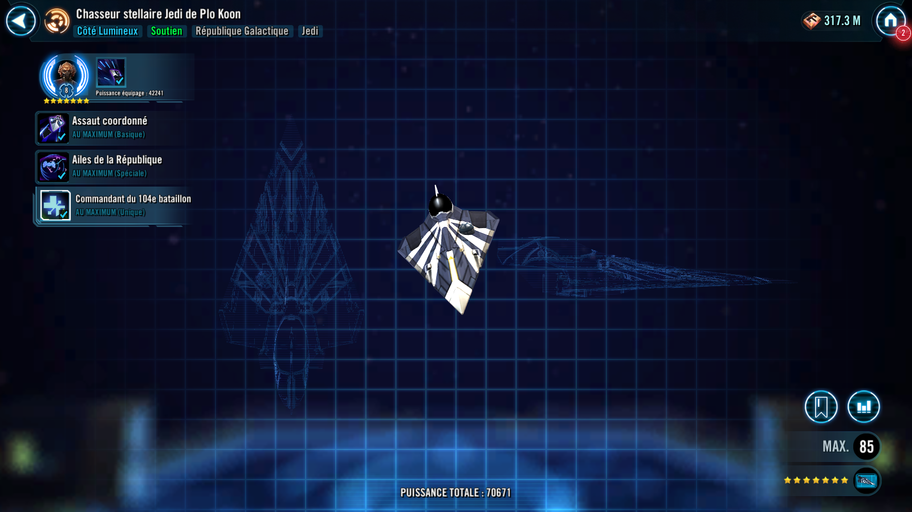

Plo Koon's Jedi Starfighter
Versatile Jedi Support with powerful Republic buffs and a targeted ally Taunt
Versatile Jedi Support with powerful Republic buffs and a targeted ally Taunt

Deal Physical damage to target enemy with a 70% chance to gain Protection Up (15%) for 2 turns.
Target Lock: Grant another random ally Protection Up (15%) for 2 turns.

All allies gain 40% Turn Meter. All Galactic Republic allies gain Health Up and Protection Recharge (45%) for 2 turns.
Dispel all debuffs on target ally and grant them Taunt and Protection Up (50%) for 2 turns. If target ally is Galactic Republic, grant them Critical Hit Immunity for 2 turns.
Enter Battle : Dispel all debuffs from all allies and they recover 40% Health and 40% Protection.